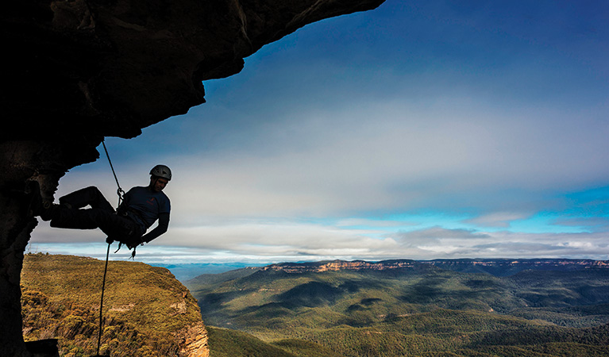
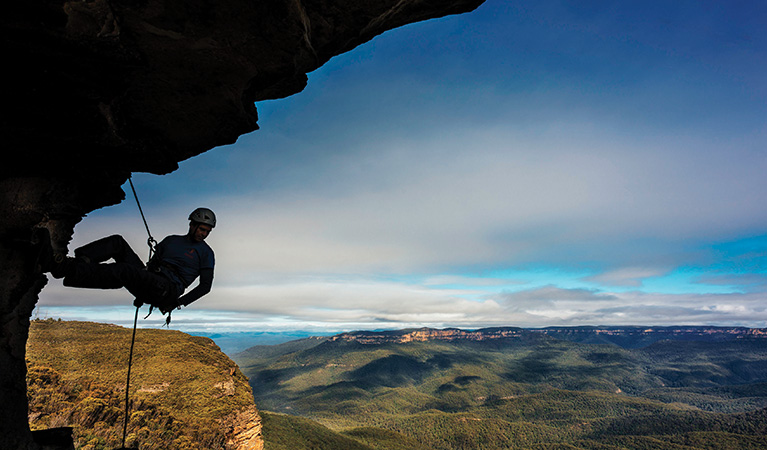

Welcome to CSS2
This is the home page. This website is designed to help canyoneers in the NSW region by improving the navigational experience through the integration of LiDAR data.
This is the home page. This website is designed to help canyoneers in the NSW region by improving the navigational experience through the integration of LiDAR data.
